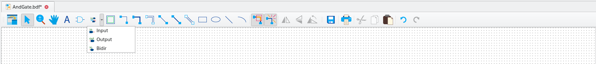

Sie haben sich also entschieden, FPGA-Programmierung zu lernen, und die Voraussetzungen aus dem letzten Blogbeitrag erfüllt. Heute möchten wir Ihnen zeigen, wie Sie Quartus verstehen lernen, indem Sie ein Hardware-Äquivalent des in der Software- welt verwendeten Hello-World-Programms erstellen – wir nennen es AndGate , weil es einfach das ist – ein UND-Gatter, das über zwei Taster als Eingang und eine Status-LED als Ausgang gespeist wird. Auf diese Weise verwenden wir die Blockdiagrammdateien (bdf) von Quartus.
Wir öffnen Quartus einfach über das Desktop-Symbol. Dann gehen wir zum Menü „Datei >> Assistent für neues Projekt“, wie unten dargestellt, und klicken darauf.
Ich habe dieses Tutorial von hier gestohlen, aber meine eigenen Bilder und meinen eigenen Stil hinzugefügt.

Setup the project
Als Nächstes sehen wir ein Einführungsfenster, wie unten dargestellt. Wir klicken auf „Weiter“, um zum nächsten Fenster zu gelangen, in dem wir das Projekt benennen.

Geben Sie ihm einen passenden Namen wie AndGate oder HelloWorld, ganz wie Sie möchten…

Als Nächstes wählen wir auf der Seite „Project Type“ die Option „Empty Project“ aus

Wir überspringen die nächste Seite „Dateien hinzufügen“ und gehen zu „Familien-, Geräte- und Board-Einstellungen“.
Bild: ../quartus_choose_device.png[Quartus - Gerät auswählen]
Hier wählen wir die Familie Cyclone IV E und das Gerät mit dem Namen „EP4CE22F17C6“ gemäß dem beiliegenden Datenblatt des DE0-nano-Boards aus. Wir klicken auf „Weiter“ und überspringen vorerst den Schritt „EDA-Tool-Einstellungen“. Schließlich gelangen wir zur Zusammenfassung des Projektassistenten.
Nachdem Sie bestätigt haben, dass alles so ist, wie es sein sollte, klicken Sie auf „Fertigstellen“, um den Projekt- assistenten zu beenden.
Erstellen der Logik
Wie oben beschrieben, werden wir die Grundfunktionen von Quartus verwenden, um unsere eigene Logik auf grafische Weise ohne HDL (Hardware Description) wie VHDL oder Verilog zu erstellen.
Es erscheint eine Registerkarte AndGate.bdf mit einer leeren Leinwand, auf der wir unsere Schaltkreise/Logikgatter „zeichnen“ können. Wenn wir möchten, können wir unseren aktuellen Status speichern, indem wir zu „Datei >> Speichern unter …“ gehen und einen Namen und Gate.bdf sowie einen geeigneten Pfad eingeben.
Bild: ../quartus_bdf_canvas.png [Quartus - BDF-Zeichenfläche]
Klicken Sie nun auf das Symbol-Werkzeug-Symbol, wie in der Abbildung unten gezeigt, um die Symbolbibliothek zu öffnen.
Bild: ../quartus_symbol_tool.png [Quartus - Symbol-Werkzeug]
Es öffnet sich ein neues Fenster, das die Bibliothek mit den drei Hauptordnern „Megafunction“, „other“ und „primitives“ anzeigt …

Wir suchen nach einem Gatter mit zwei Eingängen, also gehen Sie zu „Primitives“, „logic“, „and2“, bestätigen Sie mit „ok“…

Klicken Sie nun in die Mitte der Raster-Zeichenfläche, um das Symbol einzugeben, und klicken Sie dann auf „Esc“, um den Bibliotheksmodus zu verlassen.

Hinzufügen von Pins
Als Nächstes fügen wir einige Pins zur Designdatei hinzu. Diese Pins definieren die Schnittstelle zwischen unserem Design und den physischen I/O-Pins. Später in der Pin-Zuweisung werden wir die Pins mit den physischen Pins des Geräts verknüpfen.
Das Pin-Werkzeug-Symbol befindet sich direkt neben dem Symbol-Werkzeug-Symbol. Klicken Sie auf den Pfeil, um das Auswahl- menü zu öffnen.

Wählen Sie „Ausgabe“ aus und ziehen Sie das Symbol irgendwo neben die Ausgabe des „and gate“. Zeichnen Sie dann eine Leitung zwischen dem Gate-Ausgang und dem Pin, indem Sie an einem der Punkte beginnen, die Maustaste gedrückt halten und eine Leitung zum anderen Punkt ziehen. Dann haben wir eine Verbindung.

Jetzt machen wir dasselbe für die Eingangspins…

Zuletzt benennen wir die Pins um, damit sie besser passen. Doppelklicken Sie auf den Pin und benennen Sie ihn um. Eine andere Möglichkeit ist, darauf zu klicken und im Kontextmenü Eigenschaften auszuwählen. Wir benennen die Eingänge in „in1“, „in2“ und den Ausgang in „out1“ um, damit wir die Pins später im Pin-Zuweisungs- werkzeug richtig benennen können.

Physische Pins / Pin-Zuweisung
Um die benötigten E/A-Pins zu überprüfen, sehen wir uns das Benutzerhandbuch des DE0-nano-Boards an.
Hier – im obigen Bild – sehen wir die beiden Taster des Nano-Boards, die über den SN74AUC17 gepuffert werden, um eine Entprellung zu erreichen.
Und unten sehen wir ein (stark vereinfachtes) Schaltbild der LEDs im Ausgang, bei dem die Vorwiderstände fehlen.

Jetzt haben wir alle physischen Pins, die wir brauchen:
-
Pin E1 - erster Taster
-
Pin J15 - zweiter Taster
-
Pin A15 - Status-LED
Um nun das Design mit den physischen Pins zu verknüpfen, verwenden wir in Quartus das Tool „Pin Planner“.
Dieses Tool stellt uns eine Karte der verfügbaren Pins und Funktionen zur Verfügung und ermöglicht es uns, Teile des Designs den gewünschten Pins zuzuordnen.
Damit Quartus versteht, welche Teile unseres Designs zugeordnet werden können, müssen wir zunächst eine Teilkompilierung des Designs mit dem Namen „analysis and elaboration“ durchführen.
Analyse und Ausarbeitung
Es sind verschiedene Verarbeitungsschritte erforderlich, um unser Design in etwas umzuwandeln, das auf das FPGA geladen werden kann.
-
Analyse – in diesem Teil des Prozesses überprüft Quartus das Design auf Fehler wie Syntax- oder semantische Fehler. Ausarbeitung – In der ersten Phase der Kompilierung ordnet Quartus das Design in RTL-Blöcken an. Dies sind die Bausteine innerhalb des FPGA, die grundlegende Funktionen wie Speicher, Logikgatter und Register ausführen. Synthese – In der letzten Phase der Kompilierung synthetisiert Quartus ein Design auf Logikebene und wandelt das RTL-Design in ein Gatter-Design um.
Damit unsere Pins im Pin-Planer angezeigt werden, könnten wir eine vollständige Kompilierung durchführen. Dies ist jedoch nicht notwendig, da wir nur die Analyse- und Ausarbeitungsphase durchlaufen müssen.
Quartus stellt uns drei Kompilierungstools zur Verfügung, mit denen wir verschiedene Kompilierungsebenen durchlaufen können. Wir werden uns diese Schritte und ihre Funktion in einem zukünftigen Blogbeitrag genauer ansehen. Da die vollständige Kompilierung einige Zeit in Anspruch nehmen kann, ist es sinnvoll, nur den erforderlichen Prozess auszuführen. Führen Sie die Analyse und Ausarbeitung mit dem Tool aus, das Sie in der Menüleiste oben auf dem Bildschirm finden.
Pin-Zuweisung
Nach Abschluss des Vorgangs erhalten Sie einen Kompilierungsbericht und neben dem Analyse- und Ausarbeitungsprozess im Menü auf der linken Seite wird ein grünes Häkchen angezeigt.
Jetzt können wir den Pin-Planer öffnen, indem wir im Menü oben auf dem Bildschirm auf „Assignments > Pin Planner“ klicken.
Der Pin-Planer ist auf den ersten Blick etwas komplex, aber recht einfach zu bedienen.
Sie sehen eine Karte des FPGA mit allen physischen Pins und ihren Funktionen.

Wir interessieren uns für die Liste der Pins unten. Wenn Sie den vorherigen Schritt erfolgreich abgeschlossen haben, sollten die Pins aufgelistet werden. Geben Sie Ihre Schalter- und LED-Pins in das Feld „Location“ ein.

Die Eingangspins sollten den physischen Pins entsprechen, die Sie mit den Drucktasten verbunden haben, und der Ausgangs- pin sollte dem Ausgangspin mit der angeschlossenen LED entsprechen. Wenn Sie fertig sind, können Sie den Pin-Planer schließen.
Sie sollten feststellen, dass Quartus die Pins mit den physischen Ausgängen beschriftet hat, die wir gerade zugewiesen haben. Beachten Sie, dass ich das Design-Fenster abgetrennt habe, um einen größeren Arbeitsbereich zu ermöglichen.
Sie können ein Fenster abtrennen, indem Sie mit der rechten Maustaste auf die Registerkarte oben im Arbeitsbereich klicken und „abtrennen“ auswählen. Sie können Fenster auch über das Fenstermenü in der oberen Menüleiste anhängen und abtrennen.
Hardware-Kompilierung/Synthese
Nachdem wir unsere Pins zugewiesen haben, können wir den Kompilierungsprozess in der Hardware-Welt namens Synthese aus- führen, durch den das Design in eine binäre SRAM-Objektdatei (sof) umgewandelt wird. Das bedeutet, dass es nur im flüchtigen statischen RAM läuft, nicht persistent ist und nach dem Abschalten der Stromversorgung weg ist.
image: ../quartus_synthesis.png [Quartus - Synthesis]
Programmierung
Nach Abschluss der Synthese können wir den Programmierer ausführen, um dieses kompilierte Programm in unser FPGA zu laden. Wir können den Programmierer über „Tools >> Programmer“ oder über das unten gezeigte Symbol öffnen
Bild: ../quartus_programmer.png [Quartus - Programmer]
Nachdem Sie das Nano-Board mit dem USB-Kabel verbunden haben, klicken Sie im Programmiergerät auf „Hardware Setup“. In der Liste des sich öffnenden Fensters sollte das Gerät als „USB-Blaster“ angezeigt werden. Wählen Sie es aus und klicken Sie auf „OK“. Nun müssen wir „Auto-detect“ auswählen, um die JTAG-Kette zu scannen und nach dem FPGA-Gerät EP4CE22 zu suchen. Vergewissern Sie sich außerdem, dass die SOF-Datei generiert wurde. Wenn nichts angezeigt wird und Sie Zweifel haben, führen Sie einfach alle Schritte einschließlich der Timing-Analyse manuell aus.
Wenn die SOF-Datei vorhanden ist und die Hardware angezeigt wird, klicken Sie einfach auf die Schaltfläche „Start“. Dann erledigt der Programmierer seine Aufgabe.
Jetzt sollte die LED aufleuchten, wenn Sie beide Tasten gleichzeitig drücken. Wenn wir jedoch die Hardware testen, werden wir hier ein anderes Verhalten feststellen: Wir haben nicht überprüft, ob das Datenblatt einen hohen Pegel für die Drucktasten angibt, wenn sie nicht gedrückt werden, also müssen wir das Design ändern. Zum besseren Vergleich fügen wir außerdem ein Oder-Gatter hinzu und verbinden es mit LED 1.

Ich überlasse es dem Leser, herauszufinden, wie der Schaltkreis wie abgebildet entworfen werden kann. Wenn dies nicht gelingt (oder zu faul ist), kann die BDF-Datei hier gefunden werden (Link unten).
Link:../andGate.bdf[erweiterter Schaltkreis BDF]
Und vergessen Sie nicht, den Pin vom Ausgang des Oder-Gatters mit dem dedizierten Pin von LED 1 (PIN_A13) zu verbinden, wie unten dargestellt
Führen Sie den Syntheseprozess aus und programmieren Sie die Platine und testen Sie sie.
Wenn wir nun das Verhalten testen, werden wir sehen, dass es sich jetzt wie vorgeschlagen korrekt verhält.